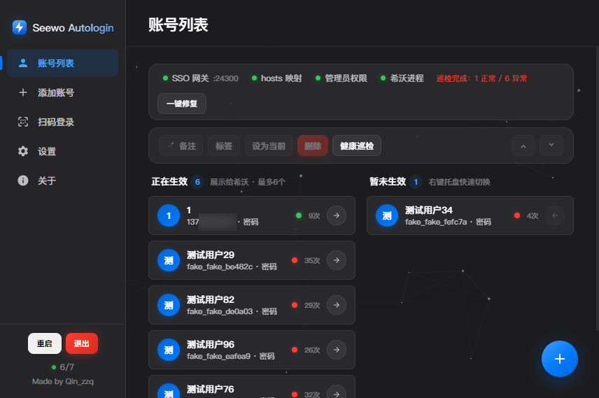
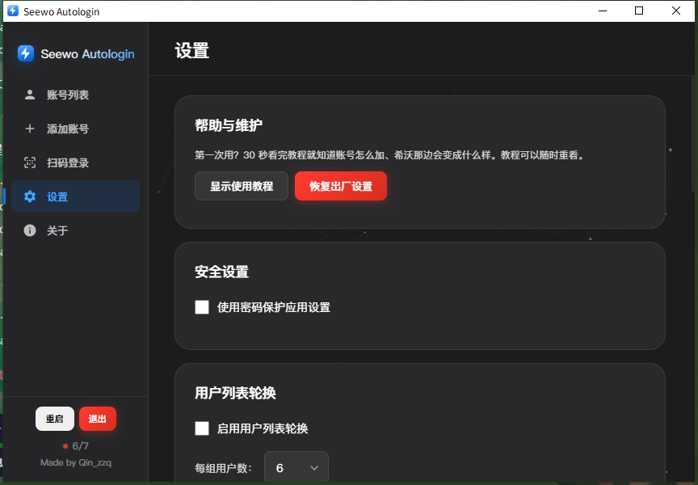
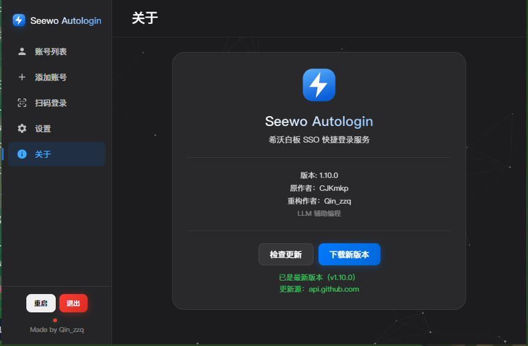
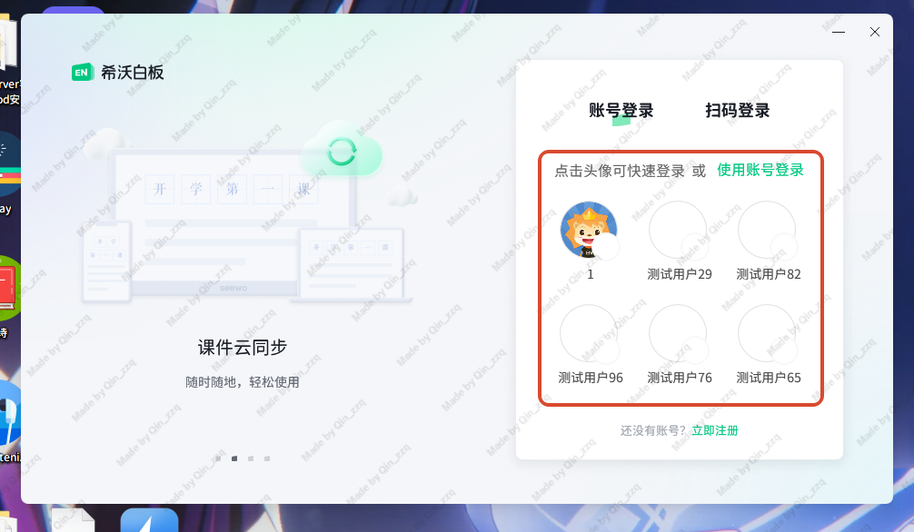

每天都会遇到
还在
挨个输入
账号密码？
上课铃已经响了
还在
等希沃
加载登录？
换间教室就得重来
还在
一个个
重新登录？
停下
。
希沃自动登录
点头像，就进了

网关、hosts、权限、希沃 ——
四项状态一眼看清

账号、教程、备份 ——
一个窗口管完

更新直达镜像，
不用翻墙

希沃登录界面 ——
点一下头像就进去
8 MB
轻量安装包
复用系统自带运行时
0 次
开机不弹 UAC
计划任务后台待命
6 个
账号直达希沃
切换只要一秒
完全开源
.
免费
·
无广告
·
无账号体系
·
数据只留本机
希沃自动登录
github.com/Pro-Qin/SeewoAutoLogin
下载最新版本
GPL-3.0 开源
Made by Qin_zzq